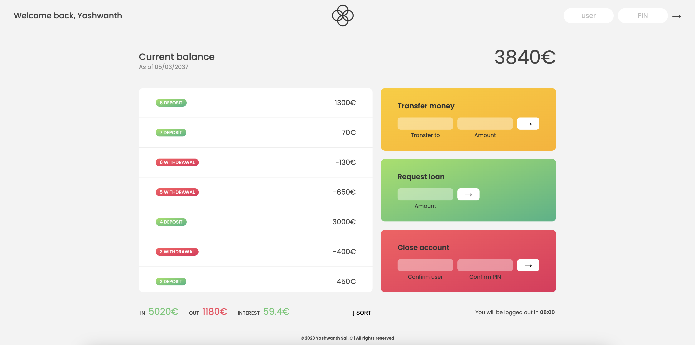

About Me
For me Web Development is extension and enhancement to my Life. I believe my passion in creating a great looking Website. The creation of websites is not defined by the time, rather it is defined by the work and thought process poured into it.
As a child, Together with my brother, I used to play video games online in a neighbouring internet cafe. and I always wondered how this online gaming website friv.com works. It stuck in my mind till now. Now I understand the work it needs to be put in, for someone like me to play games on friv.
In 2017, I would never forget the day i started my first HTML and CSS course when i was pursuing my 12th class. Each and everyday with learning new concepts i felt flourished and confident of myself.
In 2019, Coding my first project website was nothing short of heaven. To step back and say, I did it.
Over the years, I learnt advanced topics of html and css along with my favourite language JavaScript - the god of Front-end, Thats what i call it atleast.
I am currently pursuing my final year of Bachelor's in Computer Science and Engineering.
My Projects
Landing Page - FurryStop

Furrystop is a vibrant and professional pet grooming website designed to cater to the diverse needs of beloved furry companions. With a commitment to excellence, our platform offers a range of top-tier grooming services tailored to the unique requirements of every pet.
Guess My Number

Guess My Number is an engaging and interactive game project that challenges players to decipher a hidden number within a specified range. Equipped with a secure storage system, the game safely retains the number, revealing it only upon successful guess attempts.
Pig Game
Pig Game project offers an exhilarating gaming experience where two players take turns rolling a dice, strategizing to accumulate points while carefully deciding when to hold their scores to reach the coveted high score. players must tread cautiously, as rolling a 1 relinquishes their turn to the opponent.
Temperature Calculator

temperature calculator designed to seamlessly convert various temperature units including Celsius, Fahrenheit, and Kelvin. This user-friendly tool provides a quick and efficient means of converting temperature values between different units, ensuring precise and accurate results.
Bankist Application
Bankist is an innovative, user-friendly web application designed to mimic a real banking experience. It seamlessly simulates banking operations, including deposits, loan request, withdrawals, and transfer options, providing users with a comprehensive overview of their transaction history and current balance.Try Login-> user: ys, pin: 1111.
Contact

Email: Yashwanth.3270@gmail.com

Contact On LinkedIn
Whatsapp: +(91) 9704337754